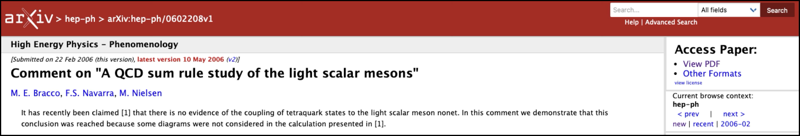
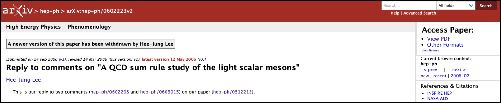
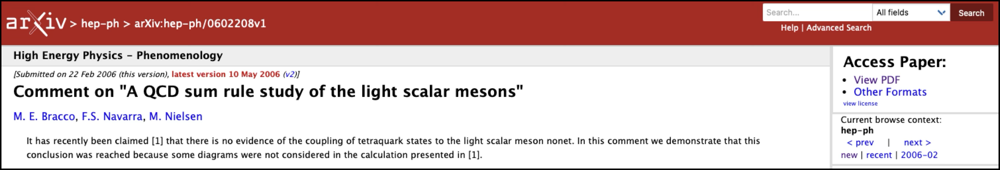
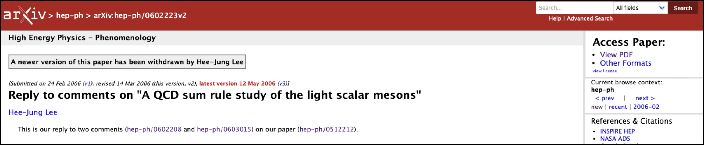

Physics and Lean
8th July 2025
Joseph Tooby-Smith, Reykjavík University
Slides at: https://josephtoobysmith.com/Slides/Maryland2025.html
Talk overview
I
What is an interactive theorem prover?
II
Introduction to PhysLean
III
Examples
A Story: The arXiv paper hep-ph/0512212
$E = A_1 + A_2 + A_3 + \ldots + A_n$
$E = A_1 + A_2 + A_3 + \ldots + A_n + B_1 + B_2$
$E = A_1 + A_2 + A_3 + \ldots + A_n$
$E = A_1 + A_2 + A_3 + \ldots + A_n + B_1 + B_2$
 




The problem
A solution
Correct by construction
Interactive theorem provers
Popular Proof Assistants
Rocq
Isabelle/HOL
Lean
Agda
An example of Lean
View at: https://josephtoobysmith.com/Slides/Maryland2025.html
How Lean Works
- • Define types by their terms
- • Create new types from existing ones
- • Propositions as types
- • Proofs are terms of proposition types
- • Uses axioms like function extensionality
Advantages of Proof Assistants
Correctness
Tactic Automation
Searchable
Reusable
Executable
Who is using interactive theorem provers?
Mathematicians Pre-2017: One-off projects
- 2004(Isabelle/HOL): Prime number theorem
- 2004(Rocq): Four color theorem
- 2005(Isabelle/HOL): Jordan Curve theorem
- 2013(Rocq): Odd order theorem
- 1998-2015(Isabelle/HOL): Kepler conjecture (Hales' proof)
Mathematicians Post-2017: Mathlib
- • A monolithic library of mathematics formalized in Lean
- • Started in 2017
- • Over 400 contributors, 80,000 definitions and 160,000 theorems
- • Promoted heavily by Kevin Buzzard